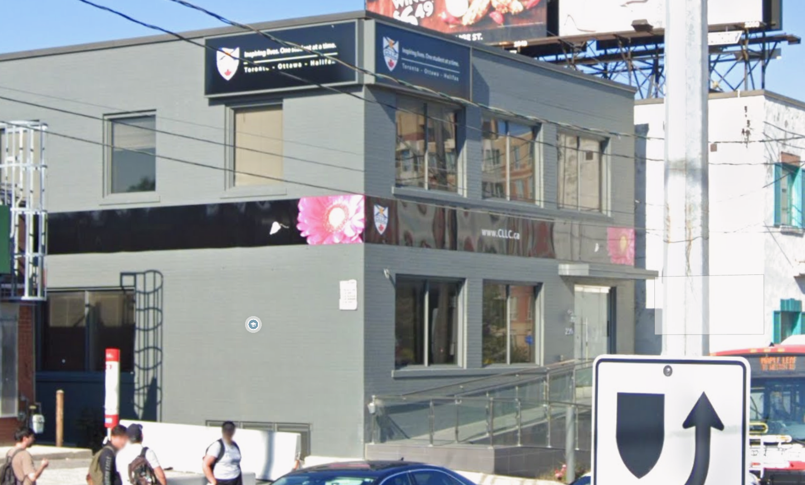
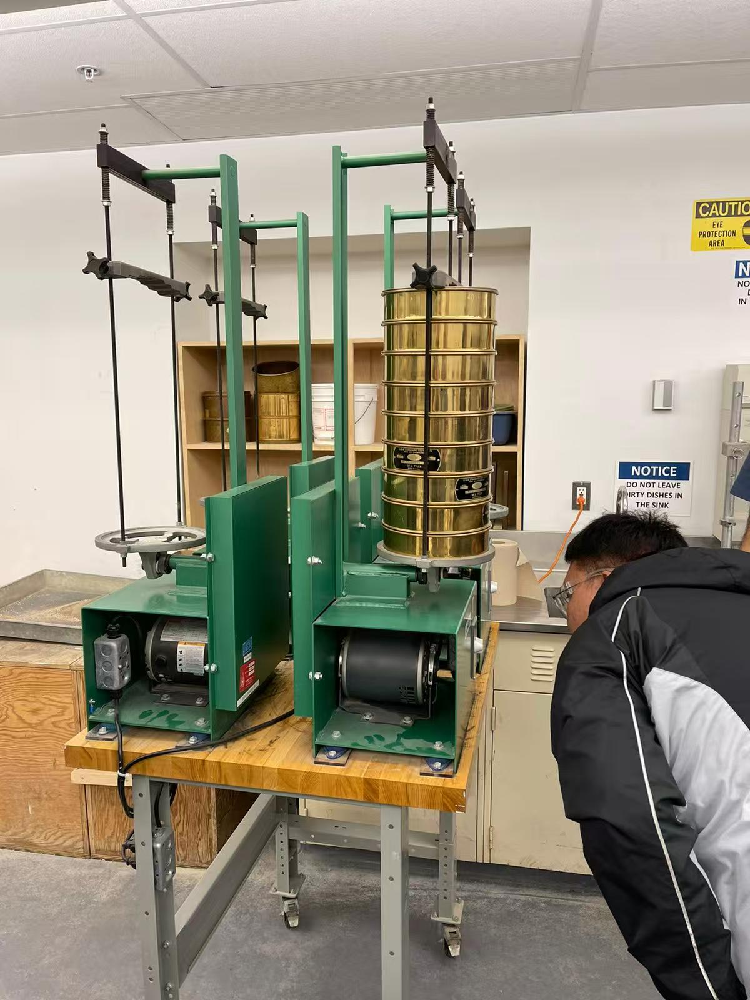
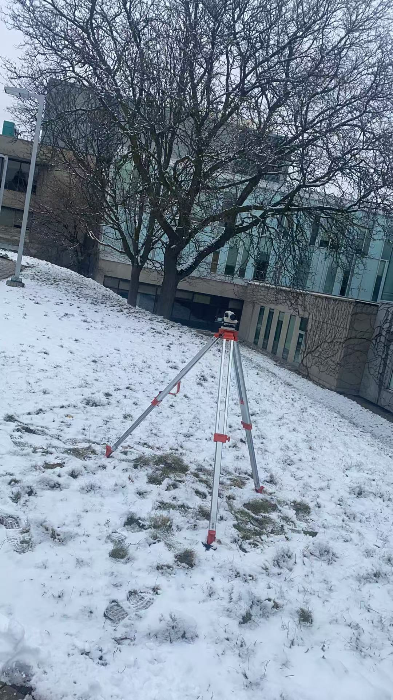
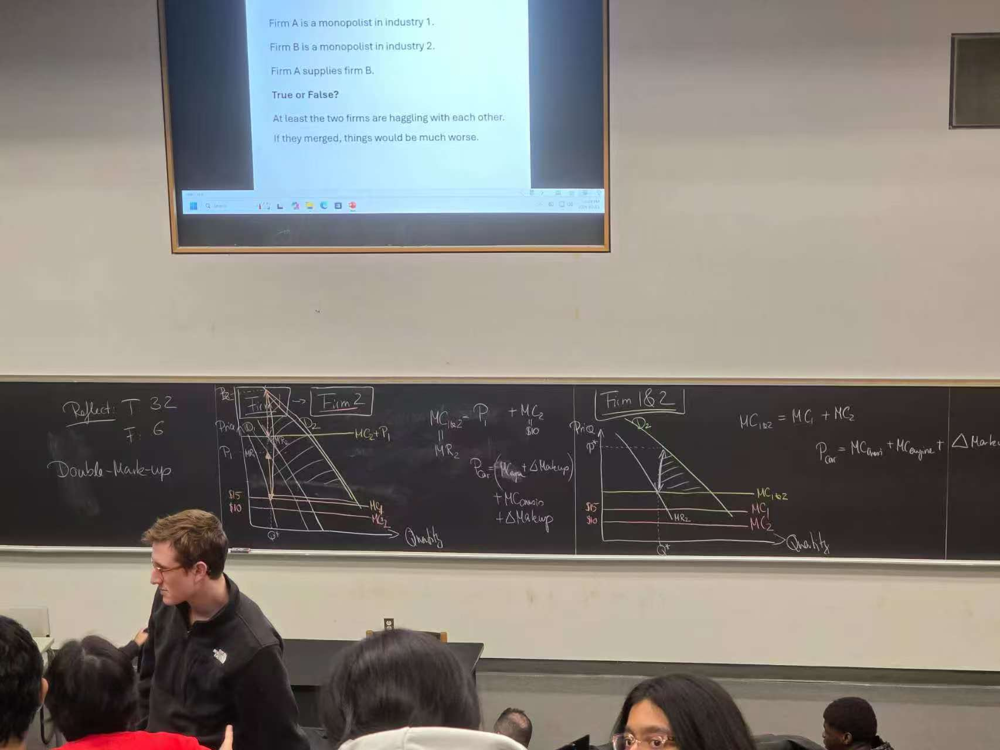
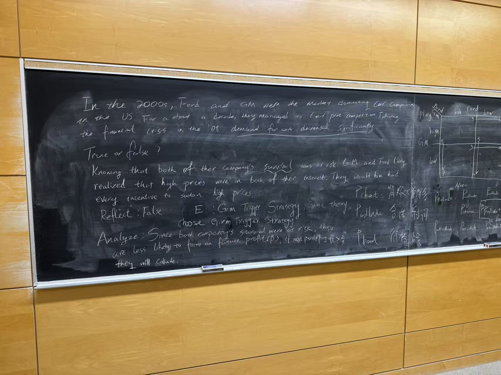
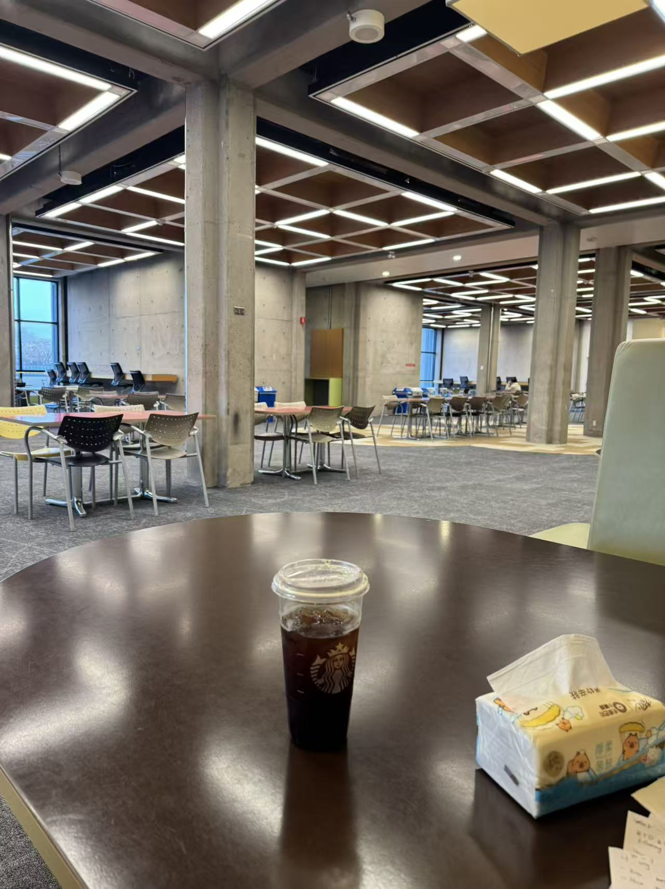

About Me
I come from China and am 28 years old. I have spent many years studying in Canada, and I really enjoy the culture and lifestyle here. My experience in Canada has been very precious to me and has become an important part of my life.
A memorable moment from my life in Canada.
Education
When I first arrived in Canada, I studied English at Canada Language Learning College (CLLC).
During that time, I met many meaningful friends who gave me a lot of support and helped me adjust to life in Canada.

Canada Language Learning College (CLLC), where I began my studies in Canada.
After graduating from CLLC, I studied Civil Engineering at Seneca College.
There, I learned how to use AutoCAD and Civil 3D with confidence, and I gained practical knowledge related to engineering and design.


Some memorable moments from my Civil Engineering studies at Seneca College.
After graduating from Seneca College, I continued my studies in Business Economics at York University.
This program has helped me look at issues from an economic perspective.



My Business Economics studies at York University.
Interests
Outside of school, I enjoy playing basketball and video games. I am also interested in learning Excel independently, because I like building practical skills that may be helpful for my studies and future work.
|